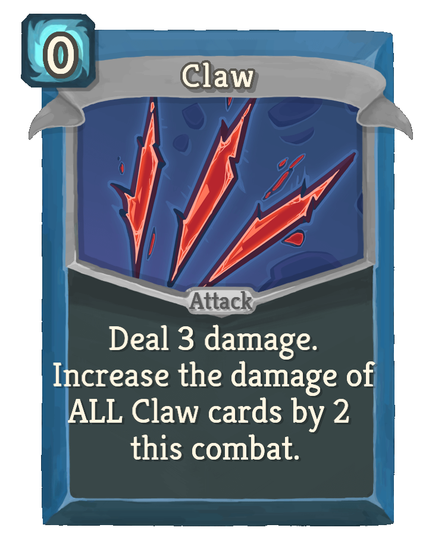
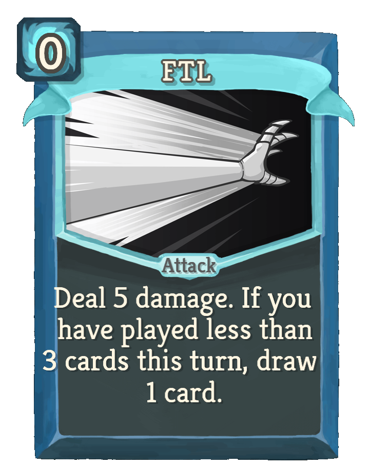
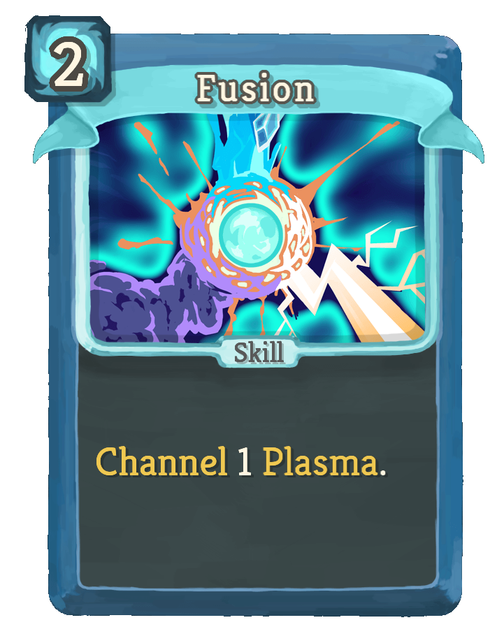
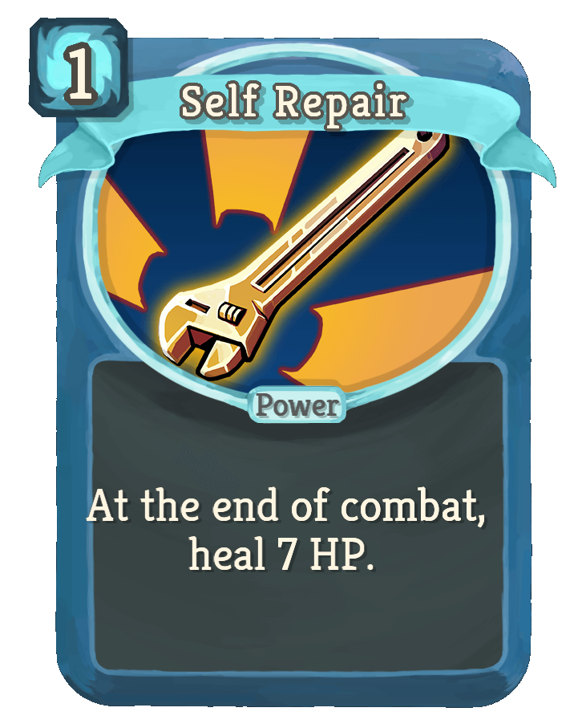
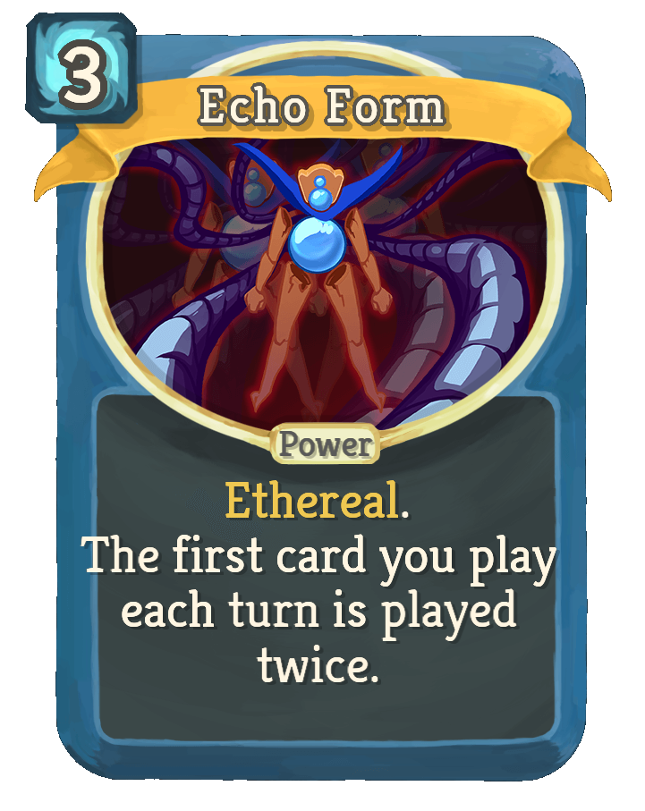

The Defect

Playstyles of the Defect
The Defect functions very differently to the everyone else. They have their own mechanic that lets them channel and evoke orbs. These orbs can damage enemies, block damage, and give additional energy. They start with 3 orb slots but can gain more through powers. The starting relic is the Cracked core. This lets them start with one lightning orb. You can exhange this relic for the Frozen core, which lets you channel a frozen orb upon starting combat instead of the lightning.
Some of my favourite Defect cards
-

Claw – Even though it starts off weak, it gets big quickly. Great for a 0 cost card. -

FTL – No cost, ok damage and draws a card. It's just free damage in the end. -

Fusion – Gives Plasma for extra energy. -

Self Repair – Most characters have no passive heal like this. -

Echo Form – Doubles your first card each turn. You can synergize like crazy.